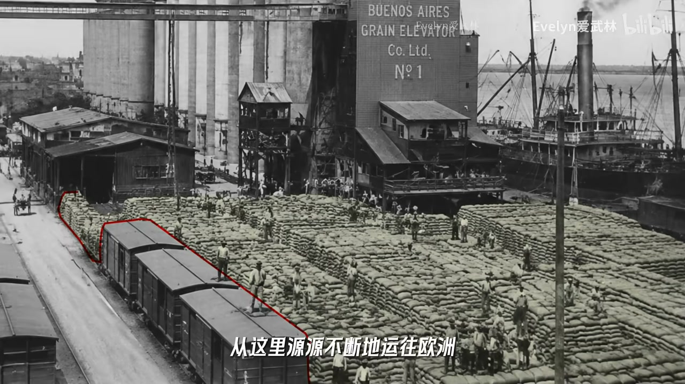
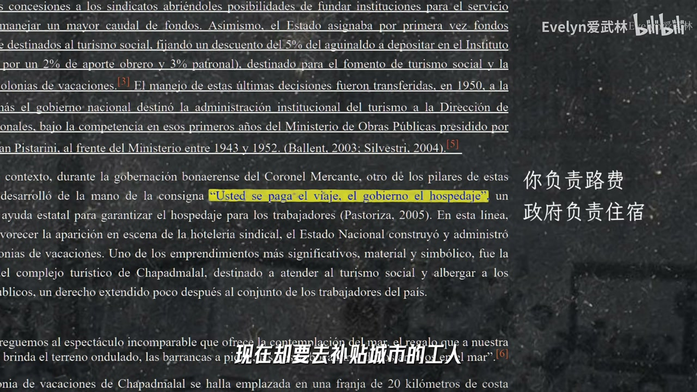
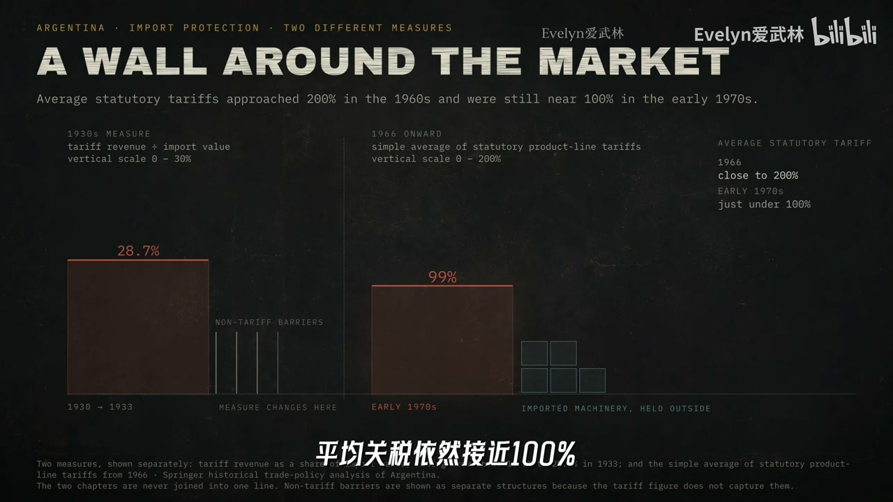
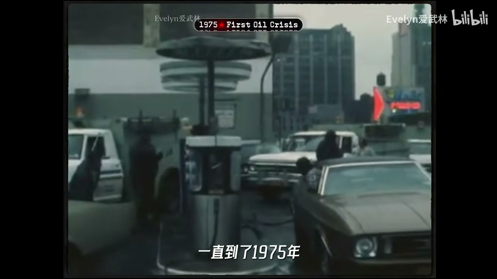
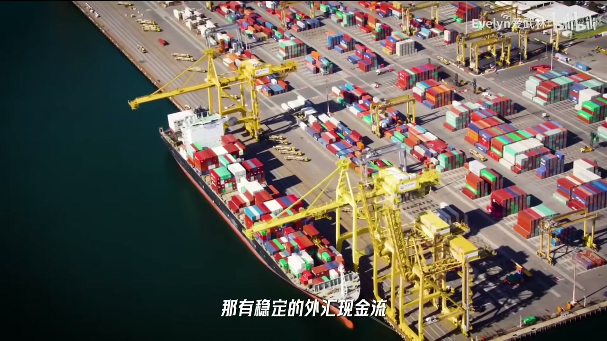
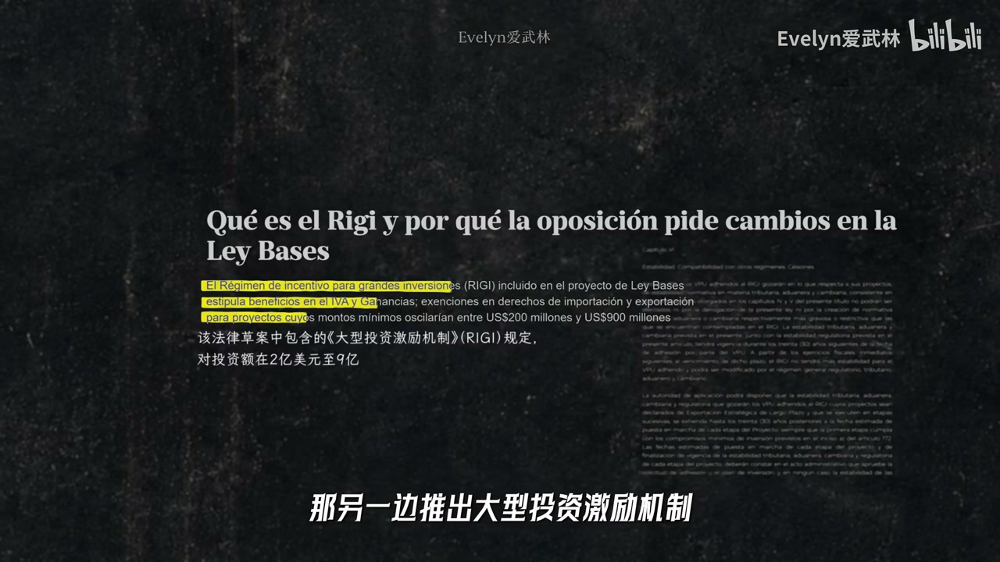

内容要点
阿根廷人不存比索、信美元；九次主权违约、IMF 最大债务国、恶性通胀抹掉多个零。视频把百年史写成探戈：一战/大萧条打断资源红利后被迫进口替代；庇隆+艾薇塔把战时农产品红利变成刚性福利，低价收购农产品补贴城市；工业内销消耗美元却赚不回美元，形成 stop-go「走走停停」。1975 罗德里戈冲击引爆工资—物价螺旋；1991 卡瓦略 1:1 兑换计划绑死印钞机却靠借美元，2001 银行围栏、两周五总统、近千亿违约与比索化没收。对照澳大利亚多出口发动机与制度稳定；米莱削减开支并推动能源矿业投资，是「开源节流」又一次上路。ASR 校正：庇隆（壁龙）、比索（笔锁）、布宜诺斯艾利斯、stop-go、兑换计划等。
知识结构
潘帕斯+冷藏船致富；战争与大萧条打断全球化 1.0。
福利刚性、农产品剪刀差、温室工业、印钞高压。
兑换计划控通胀却借债；银行围栏自我实现信用死亡。
多外汇发动机 vs 单一潘帕斯；开源节流仍是药方。
阿根廷不是「天生蠢」，而是富裕记忆+刚性福利+外汇创造能力不足的百年错配；每次危机都选印钱/借钱捷径。解药始终是提高创汇能力或瘦身支出——米莱能否跳出循环仍取决于社会能忍多久。
00:00-06:40富得像阿根廷人：红利与断裂
潘帕斯草原养活牛羊粮食，冷藏船把牛肉送上欧洲餐桌；1913 年人均 GDP 进全球前十。布宜诺斯艾利斯成南美巴黎，欧洲移民留下「体面生活」记忆——日后每次衰退都像身份被否定。
一战与大萧条打断英国资本与欧洲需求，资源复国近亲澳大利亚走了另一条路。阿根廷被迫进口替代「自己造」，不是天生反全球化，而是被最早反噬的赢家。

06:40-18:40庇隆福利、剪刀差与印钞高压锅
工业劳动力翻倍催生城市工人；庇隆与艾薇塔把高工资强工会养老金写成社会契约。二战后农产品红利喂饱福利，但政府低价收购农场主产品补贴城市，创汇机器失速。
家庭账本比喻：农场主赚美元减少，工业内销消耗进口设备美元增加——缺口打开。关税高墙养成温室工业，越繁荣越烧外汇，出口仍靠农产品，经济跳 stop-go 探戈。印钱填窟窿至 1975 罗德里戈冲击，工资物价螺旋把通胀变成行为方式：到手比索即花或换美元。



18:40-28:40兑换计划、外债与银行围栏
1991 卡瓦略 1:1 兑换计划绑住印钞机，通胀骤降、外资回流，但未解决如何多赚美元——缺口靠借外债填。美元走强、邻国贬值、资本外逃时制度自动抽干流动性。
2001 挤兑→每周限额取现的银行围栏→敲锅抗议→两周五总统→近千亿违约→放弃 1:1→强制比索化：恐惧自我实现，城市贫困率过半。死后二十多年仍反复回到高通胀失信螺旋。
28:40-34:14澳大利亚对照与米莱开源节流
澳大利亚同样靠资源，但矿业能源等多部门持续创汇+制度稳定吸引长期资本。阿根廷有页岩气等潜力却难做十年投资；缺口出现总选印钱借钱。庞大公职与慷慨福利难瘦身。
米莱以宏观教授身份挥电锯：2024–2025 连续财政盈余，大型投资激励推动能源矿业项目，股市与国家风险指标一度改善，通胀降温。休克让部分人剧痛——这次是跳出困局还是又一场闹剧，仍待时间检验。


完整转录（1142段）
以下文本由 Whisper 自动转录，可能存在识别误差；正文与导语已按语境校正专名与术语。
朋友 你的钱呢
如果你问阿根廷人这个问题
可能埋在扩花园
甚至是重庆床垫里
反正是不存银行
而且他还会反问你
你说的是哪种钱
因为阿根廷的笔锁
已经被通账无情的抹掉了13个零
爷爷留的那1000万
现在连一根冰棍都买不起了
他们信的是美刀
甘苗
这个魔幻的国家
就是阿根廷
作为世界上极少数
从发达国家跌回发展中的国家
一个多世纪以来
他干出了九次主权债务违约
IMF的最大债务国
百分之几千的超级恶性通胀
超过2000亿的民间美元资产
比本国流通的笔锁还多
不到两个星期换过五任总统
而现任总统米莱
他的电剧一路咆哮着赢下大选
那不少人都爱笑话阿根廷
眼看他起高楼
眼看他楼塌了
还有那句流传甚广的老狗
所以他真的有那么蠢吗
阿根廷可不只有梅西
他不仅是世界地图的尽头
更是宏观经济学的百目大
他那魔幻的经济史
就像一曲Tango
每年的时间里走走停停
极限拉扯
经济学界流传着一句话
世界上有四种国家
发达国家、发展中国家
日本和阿根廷
那今天我们就一口气讲清
这个让经济学家跌破眼镜的
第四种国家
到底是如何从夯倒拉
19世纪末
如果你是一头牛
你最向往的那绝对是阿根廷的
潘帕斯草原
那可是顶配
气候温和、一望无际
肥得流油的黑土地
那同样是温带草原
美国的中西部长出了苦咖哈的自耕农
而阿根廷呢
很多地方
甚至不太需要复杂的技术
牛羊往地里一放
自己就长飙
可真是个风水宝地
种粮食也是不费吹灰之力
那与此同时
19世纪末的欧洲正在迅速工业化
城市人口膨胀
工业阶级壮大
对粮食和肉类的需求一路上升
英国人手里正好要大把资本
于是英国人涌进阿根廷
修铁路建港口
更重要的是有一项技术
直接改变了阿根廷的国运
冷藏船
潘帕斯的牛肉第一次跨越了大西洋
被端上了欧洲人的餐桌
那到了1914年
外国投资已经占到了阿根廷全国资本存量的一半
阿根廷就是这么躺着
成了全球化1.0时代的
超级赢家
1913年
他的人均GDP排进的全球前十
比法国德国还高
所以当时欧洲流传着一句话
富的像个阿根廷人
可不是空穴来风
而首都布依诺塞利斯
就是阿根廷连接世界的超级枢纽
潘帕斯的牛肉和小麦
从这里源源不断地运往欧洲
欧洲的钱、奢侈品、割据
还有数以百万计的移民
也从这里进入了阿根廷
而这,竟是阿根廷后来
很多悲剧的心理起点
你看东亚,大部分是先经历
极端贫穷
再靠着几代人在工厂里卷
在产业链里一点点往上爬
才慢慢变富的
但阿根廷不是
它在成为一个成熟的现代化工业国家之前
那些飘扬过海来的西班牙和意大利移民
有些下船不久就能找到收入不错的工作
他们建起了法式穹顶、剧院、咖啡馆
那布依诺塞利斯
也渐渐有了南美巴黎的名号
所以你看
阿根廷和其他南美国家不大一样
它非常欧洲,非常白
因为意大利移民的大量涌入
这篇书的西语都带着一股意大利味儿
那什么是阿根廷人呢?
就是一群说着西班牙语的意大利人
自以为是英国人
却住在了巴黎市的城市里
那这句话精准概括了
阿根廷骨子里的欧洲情节
那当时的阿根廷人极其骄傲
这种骄傲在整个社会留下了
很深的富裕记忆
当一个社会太早就知道
体面的生活该是什么样
以后每一次经济衰退
就不再是冷冰冰的数字
而是一种质疑
那到这里你可能想说
诶 等一下
这剧本听着有点耳熟啊
地广人稀
老天爷赏饭
靠卖资源发家
工资高
大量欧洲移民
这不就是
澳大利亚吗?
没错
当年阿根廷和澳大利亚
向一对资源复国近亲
可为什么100多年后
一个依然是复国
另一个却反复进了重症室呢?
往下看
我们后面会看到
阿根廷和澳大利亚的资源
和资源复国近亲
那阿根廷的好日子
一直持续到1914年
第一次世界大战爆发
那接着1929年
又发生了什么呢?
大萧条
全球化1.0时代
轰然断裂
英国资本开始退潮
欧洲需求崩塌
饭都快吃不上了
谁还来买你的
高级牛排啊
那阿根廷原来的增长模式
被瞬间重创
后来很多人嘲笑阿根廷
说他在30年代
搞的进口替代
传统的产品
这简直是脑子进水了
但如果你是当年的阿根廷
你想想
世界贸易崩塌
资本断流
你想买的工业品
人家可能都不卖给你了
那你还能怎么办呢?
所以他做了一个
当时看来理性的决定
那我们要
自己造
所以
不要觉得阿根廷是
天生反全球化
想逼关锁国
他不是
他是被全球化
最早反噬的
赢家
那回头复盘这50年
你其实
很难捡到
那回头复盘这50年
你其实
很难简单的说
阿根廷真的做错了什么
当然
顺风顺水的时候
他本可以
更早的发展工业
建立更健康的
税收和分配制度
也可以减少
对农产品出口
和外国资本的依赖
但他的运气
也确实不算好
老天爷赏的这碗饭
先被世界大战
翻了一次
后来又被大萧条
掀了桌子
那从那个时间点来看
从向外看
转向向内看
是一次
相对理性的自救
他既然决定了自己造
阿根廷的进口
替代工业化
就轰轰烈烈的搞了起来
那为了造东西
工厂越建越多
大量内陆的劳动力
涌入了首都
布依诺斯艾利斯
从1935年到1946年
阿根廷的工业劳动力
直接翻了一倍
一个庞大
且极具战斗力的群体
诞生了
城市产业工人
那人一多
政治就来了
这时候
阿根廷历史上
最绕不开的男人登场了
胡安壁龙
提到壁龙
你可能更熟悉他的妻子
还记得那首
荡气回肠的名曲
阿根廷
别为我哭泣吗
这首歌唱的
就是33岁变早逝的
壁龙夫人艾维塔
那出身贫寒的艾维塔
几乎成了
阿根廷底层劳工
心中的神啊
他亲自给穷人
发缝纫机
衣服 面包
他让那些
长期被忽视的人
第一次感觉到了自己
被这个国家深深地爱着
在艾维塔
强大的人格魅力的加持下
壁龙把庞大的工人阶级
组织了起来
使他们获得了
前所未有的政治影响力
和收入份额
高工资 强工会
贷薪 休假 养老金
解雇补偿也进一步扩大
那在壁龙上台的
最初的几年里
阿根廷工人的实际工资
增长了30%以上
那你可能会问
阿根廷哪来这么多钱发福利
因为二战刚结束的时候
欧洲满目疮痍
非常需要阿根廷的肉和粮食
于是他又靠着卖资源
大赚了一笔
手里攥着充足的
黄金和外汇资产
那当时的阿根廷
是真的有钱
但壁龙犯了一个致命的错误
他把一场临时报复
变成了国家的刚性承诺
外部红利
是会随着周期消失的
但老百姓的福利
一旦开始
是很难收回来的
由奢入解难
从一种社会心理
变成了阿根廷制度的紧箍咒
那么问题来了
福利
是需要真金白银来养的
账打完了
前几年攒下来的钱
也慢慢地花掉了
那接下来
靠什么继续养活这庞大的城市
维持工人们
已经习惯的生活标准呢
那政府一转头
就盯上了阿根廷
最能赚外汇的地方
潘帕斯草原
潘帕斯草原上的牛和粮食
是有国际竞争力的
那对于农场主来说
牛可以出口
在国际市场上卖高价
给国家赚外汇
但是阿根廷人
每天的餐桌上
那也是要牛肉的
如果按照国际上的高价
卖给本国老百姓
那这些人可是要掀桌子的
于是政府下场
成立了专门的贸易机构
统筹收购农场主的农产品
那这个价格差别有多大呢
有时候收购价
只有国际市场价格的一半
那政府低价收上来
再以更高的价格
去国际市场上卖
那赚来的差价
一部分用来压低
国内食品的价格
另一部分
则被拿去支持公共支出
福利体系
各种政府项目等等
那如果你是农场主
你乐意吗
原本你的牛
是可以卖到国际市场上
赚个好价钱的
现在却要去补贴城市的工人
那农场主被薅了羊毛
就越来越没有动力去养牛种地
于是阿根廷这最能赚外汇的机器
动力也越来越不足了
好 讲到这里
为了让你更直观地看懂
阿根廷接下来几十年
为什么会反复出问题
我们换一个更微观的视角
如果你把阿根廷想成一个
我们假设以前
这个家一年花700美元
农场主在外面可以挣1000美元
那日子过得还挺滋润的
但是后来
家里搞起了工业化
城市里的工人盖得再起劲
他们赚的也是笔锁
也就是在家庭内部流通的饭票
那这些饭票在家里当然有用
但他们不能直接拿到外面买东西
而偏偏这个家搞工业化以后
需要买越来越多
国外的机器零部件和原材料
与此同时
城市里人口增加
一路扩张
于是情况开始变了
原来一年能从外面赚1000美元的农场主
因为投资和生产积极性的下降
现在可能只能赚800美元了
可另一边
这个家每年的开销
却从700美元上涨到了1300美元
那赚进来的越来越少
要花出去的却越来越多
缺口一下子打开了
那你肯定会问
为什么非要赚美元呢
我们在家里花笔锁不就行了吗
一个国家当然可以用自己的货币
支付国内工资养老金和福利
但在国际分工
越来越深入的世界
没有哪个国家能把所有的东西
都自己造出来
那工业设备
关键零部件
能源原材料
甚至某些生活必需品
总有一些
你要从国外买吧
而到了国际市场上
别人不会直接收你的笔锁
你需要的是
大家都愿意接受的国际货币
你需要的是
国际货币
所以到这里
阿根廷的问题
已经浮出了水面
第一
它能持续创造外汇的部门
看来看去
主要还是潘帕斯
第二
国内需要维持的福利保障
却水涨船高
而闭轮的政策
再加上艾维塔留下的情感遗产
最终变成了一份
极难违背的刚性社会契约
这个国家对内承诺的东西
越来越多
但它却越来越强大
所以说
这个国家对内承诺的东西
越来越多
但它对外真正能赚回来的钱
并没有同步增长
而真正的灾难
才刚刚开始
十几年以后
世界再次发生巨变
阿根廷
这个已经开始
入不敷出的家
即将面临一场真正的
降维打击
时间来到了50年代中后期
刚才咱们说了
阿根廷即将迎来降维打击
那为什么呢
因为外面的世界
已经开始快速变化
二战结束之后
各国家进入了战后重建
全球贸易重新繁荣
日本 西德
再到后来的韩国
都开始积极拥抱相似的模式
出口倒向
他们的打法是
进口设备和技术
升级自己的工业
再把制造业产品卖到全世界
把万惠赚回来
但阿根廷呢
他选择在自家院子周围
气起了一道
关税高墙
因为长期实行进口替代
工会极其害怕开放进口
抢他们的饭碗
那在60年代
阿根廷的平均进口关税
接近200%
及时到了70年代初
平均关税依然接近100%
那这堵墙
把阿根廷的工业养成了
温室里的花朵
如果你细看
它的工业门类其实还挺齐全的
汽车 钢铁 化工
很多都能造
但问题是
这些东西一旦出了国门
就没有竞争力了
基本只能卖给自家人
你想啊
关起门来
大哥造的汽车
只要比二哥造的好
就能赚钱
可一旦走出这堵关税高墙
他面对的可是
丰田 大中这些怪兽级别的对手
阿根廷这朵带着
早年富裕记忆
又被高福利和保护政策养大的
温室花朵卷得过人家吗
这就引出了一个
非常反直觉的现象啊
这个家在院子里
折腾得越繁荣
它的外汇压力就越大
因为大哥在家里造汽车
总得去德国买高精度的机床吧
那二哥造机器
总得进口一些关键零部件吧
而国外的厂商要美元
于是工厂开的越红火
消耗的美元就越多
可是真正在持续赚美元的
依然主要是潘帕斯
因为啥
因为大哥和二哥造的东西
只能内销
他们消耗美元却赚不来美元
那到了70年代
阿根廷的出口依然高度依赖
农产品加工
高达出口总额的80%
而进口的大头
却恰恰是机器运输设备
和这些工业投入品
前面我们算过账啊
全家人的美元开销
已经从700涨到了1300
可原本能赚1000美元的农场主
现在可能只能赚800了
这几千万人的工业国
最后还是骑在了牛背上
牛已经吐血了
于是阿根廷的经济
就像跳滩狗一样
开始一场极限拉扯
那经济学里有一个专门的名字
叫DOP GO走走停停
什么意思呢
你看没有外汇了
买不起国外的机器和零件
大更二高就得停工
那工厂一停
经济下滑
失业上升
比索贬值
老百姓消费为民
经济陷入衰退
那神奇的是
一衰退
大家不消费了
工厂不进货了
进口跟着暴跌
这时候农场主卖牛
卖粮攒下来的那点美元
诶 又够用了
这个家一看
有美元了
一拍大腿
刺激经济
开工
可经济刚一回暖
机器又要进口
零件又要进口
消费也回来了
美元再次吃紧
然后呢
停工
衰退
攒美元
开工增长
再烧光
走一步
退一步
阿根廷就是踩着这个节奏
跳了几十年的滩狗
始终冲不出去
这也成了后来它魔幻经济
最核心的癥结之一
更要命的是
这场拉扯
把整个国家的精气绳
一点点磨掉了
实际上
外汇不足这个问题
从40年代开始
一直拖到了70年代
那你可能会问
阿根廷的账本
明明早就对不上了
它是怎么撑了几十年的呀
答案
简单粗暴
印钱
既然赚来的钱不够
那就先印钱
把国内的窟窿填上
于是政府一边印钱
支付各种福利和财政开支
另一边
想办法控制物价
不让涨价的速度太快
从40年代开始
阿根廷的通胀
就逐渐进入了
长期的双位数时代
印钱带来的压力
已经开始一点点积累了
整个阿根廷经济
就像一口
不断加压的高压锅
一直到了1975年
第一次石油危机之后
进口成本上升
外汇储备不断流失
国内财政价格和公司矛盾
已经全部崩到了极限
当年6月
新上任的经济部长罗德里戈
决定暴力掀开高压锅的盖子
汇率一次性大幅调整
从1美元换10比索
直接跳到了26比索
大幅贬值
汽油价格提高了约180%
水电、交通等公共服务价格
也大幅上调
这就是阿根廷历史上
著名的罗德里戈冲击
那这一下
城里的工人们炸锅了
物价翻倍
那我们的工资也必须翻倍
拥有几百万会员的强大工会
迅速组织了全国性的大罢工
那政府扛不住了
原本想压住工资
上涨在40%以内
最后被迫让步
平均工资涨幅
达到了约180%
这就好比
左脚踩着右脚上天
工资刚涨
企业一看
成本上去了
那就涨价
物价一涨
工人一看
刚涨的工资又不够花了
那就继续要求涨工资
于是
价格坠着工资跑
工资又坠着价格跑
高压锅
彻底炸了
真的没钱了
那咱就别装了
到1975年底
阿根廷的通胀
直接飙到了惊人的335%
从这一刻起
通货膨胀
不再是一个简单的经济数字
它开始改变
阿根廷人的行为方式
全家人突然发现
手里的笔锁
按天计
甚至按小时计
都在贬值
于是
大哥在干活之前
要先把明天的通胀
算进今天的工资里
要求指数化加薪
二哥每天早上第一件事
就是给商品调价
而所有人
只要一拿到笔锁
要么立刻花掉
要么赶紧换成美元
笔锁只负责今天的消费
美元才负责未来
当一个国家的国民
把对未来的信任
都换成另一个国家的钞票时
这个国家的信用
也就开始死亡了
而就在这信用死亡的废墟之上
阿根廷又即将憋出一个
最颠的大招
垂死病中
惊作起
一通操作
猛如虎
时间来到1991年
阿根廷来了一位
硬核的经济部长卡瓦略
看着已经破产的国家信用
卡瓦略给出了一个
简单粗暴的解决方案
既然政府管不住印钱的手
那就用法律把这双手绑起来
这就是经济史上著名的
对换计划
注意
这可不是嘴上随便喊喊的
新的制度规定
笔锁和美元以1比1固定对换
那原则上
央行想在市场上发行更多的笔锁
就必须有相应的美元资产作为后盾
那没有新的美元进来
就不能像以前一样
想印多少笔锁就印多少笔锁
那这意味着什么呢
意味着阿根廷主动放弃了
大部分货币政策的自主权
以前经济不好
还可以印钱放水
现在可不行了
阿根廷的笔锁
某种意义上成了一种美元代金券
自己的货币松紧
也被死死绑在了美元身上
那效果是立竿见影的
老百姓一看
现在这个笔锁真的可以1比1换美元吗
那我还每天跑黑市折腾什么
仅仅几年时间
阿根廷真的把恶性通胀打了下来
到了90年代中后期
通胀已经降到了极低的水平
1999年甚至出现了通缩
更有意思的是
外资这一次也真的信了
1比1都写进法律里了
那这个国家好像又有救了
于是资本重新涌入了阿根廷
那还记得我们前面
一直说的那个美元缺口吗
这一次美元确实又来了
只不过这一次不是自己赚来的
而是别人带进来的
资本流入加上改革带来的信心恢复
阿根廷的经济也迎来了
连续几年的高速增长
看起来
它好像终于走出了那个
困扰它几十年的死循环
但是别忘了咱们算过的那笔账
我们说过
阿根廷最主要的问题是外汇短缺
而外汇短缺最底层的原因
是这个国家缺少足够强大的
能够持续在国际市场赚钱的产业
来覆盖进口和外债偿付
全家一年要花1300美元
可真正能从外面稳定赚回来的
只有800美元
卡瓦略的这套1比1魔法
解决了一个非常重要的问题
它让大家重新相信了阿根廷的钱
但它没有解决另外一个问题
这个国家到底怎么赚更多的钱呢
1比1可以锁住印钞机
但它交不回一家工厂
怎么把汽车卖到德国
也交不回一个国家
怎么长出第二个潘帕斯
于是问题很快又回来了
这个家原来承诺的福利政府开支
要不要继续花呢
那是要的
不然老百姓不答应
可现在印钱这条路已经被自己堵死了
那钱从哪来呢
答案又一次简单粗暴
借
整个90年代阿根廷的外债一路上滚
1991年大约623亿美元
到了2000年
已经涨到了接近1500亿美元
不到10年
翻了一倍还多
那换句话说
阿根廷借掉了一个坏习惯
印笔锁
但它很快又养成了另外一个坏习惯
借美元
那到了90年代后期
外面的世界又开始变脸了
美元走强
阿根廷的笔锁死死绑着美元
也只能被迫跟着一起变贵
那这下可麻烦了
笔锁越贵
阿根廷的东西在国际上就越贵
进口商品就越来越便宜了
本来就不算强的出口竞争力
又被削弱了一层
那与此同时
亚洲金融危机
俄罗斯违约
也让国际资本开始重新审视新兴市场的风险
外资一看
诶等等
那我投进去的美元
以后还能拿回来吗
信心一松动
资本流入减速
借钱的利息越来越高
更要命的是
有人拿着笔锁去央行换美元
把美元带出国
央行就必须履行1比1的承诺
那美元一减少
因为1比1对混
那市面上可以流通的笔锁
就只能跟着收缩
也就是说
在经济最需要钱的时候
这套制度反而会自动把国内的钱抽干
经济越差资本越想跑
资本越跑
美元越少
美元越少
笔锁和信贷就越紧
这种被动的机械的紧缩
导致阿根廷国内的流动性枯竭
银行没钱可贷
利息被推高
企业融不到资
实业被活活憋死
卡瓦略的这波操作
就像给一个重症病人
打了一剂猛烈的强心针
心跳似乎真的恢复了
甚至一度看起来病人已经痊愈
但问题是
他的造血功能始终没有恢复
而到了1999年
邻居又给了
已经非常虚弱的阿根廷一剂重拳
阿根廷最重要的贸易伙伴之一
巴西突然让本国货币大幅贬值
这等于告诉全世界
巴西的东西一夜之间打折了
可阿根廷还死死绑着美元
动不了
于是阿根廷的商品又变贵了
已经很脆弱的出口竞争力
再次被狠狠削了一刀
到这里
他已经同时踩中了三个雷
汇率太贵
债务太高
经济在衰退
而拆雷的办法明明就摆在那里
货币贬值啊
让笔锁便宜下来
出口就能喘口气
可偏偏这个逃生按钮
早在1991年被他自己亲手焊死了
一场史无前例的经济大雪崩
已经在路上
2001年阿根廷经济已经陷入严重衰退
外部融资几乎断裂
经历了这么多
即使一个外人
我想你也能感觉到
财富并不真正相信这个国家
对阿根廷的老百姓来说
你想想
过去几十年他们经历了什么
动辄百分之几千的恶性通胀
一辈子攒下来的财富
可以被无情的抹掉十几个零
整个90年代
卡瓦略的1比1魔法
像是一针强效麻药
终于给了大家一丝安全感
笔锁就是美元
银行里的钱
随时可以1比1换成美元
很多人才终于敢把钱重新存回
银行
但到了2001年
情况越来越不对了
经济持续衰退
政府背着越来越沉重的债务
外资开始撤离
美元储备不断流失
整个金融体系已经摇摇欲坠
阿根廷人心里
那个埋了几十年的恐惧
瞬间被唤醒了
国家的美元是不是快没了
政府是不是又要让笔锁变废纸了
于是
越来越多的人开始做同一件事
跑银行
把账户里的笔锁换成美元
把美元取成现金
仅仅2001年11月
私人部门存款余额
就减少了44.7亿笔锁
其中大约40%
发生在11月的最后两天
银行系统
眼看就要被挤兑抽干
12月1日
政府终于扛不住了
又做了一个简单粗暴的决定
不许取了
当然
不是真的一分钱都不能动
政府规定
不管账户里有多少钱
每个人每周
最多只能提250笔锁的现金
这个著名的措施就是银行围栏
我很难想象这种感觉
如果是你呢
辛辛苦苦工作了几十年
钱明明就在自己的银行账户里
你看得见
但你拿不出来
你能接受吗
这一下
阿根廷老百姓彻底炸了
人们愤怒地走上街头
拿着家里的锅碗瓢盆
在银行门口街道上疯狂地敲
这就是后来成为阿根廷政治符号的
抗议很快升级
抢劫骚乱开始蔓延
政府宣布进入紧急状态
12月20日
总统扛不住了
宣布辞职
坐着直升机逃离了总统府
接下来的不到两个星期
阿根廷的最高权力走马灯一样换
前前后后五个人坐上了总统的位置
阿根廷总统几乎成了当时
全世界最危险的工作
就在这场大乱中
临时总统萨厄上台之后向全世界宣布
违约规模近1000亿美元
成为当时历史上规模最大的主权债务违约
然后我相信你们都猜到了
2002年初
阿根廷正式放弃了固定汇率
那个已经苦苦支撑了10年的1比1承诺
最终还是以闹剧收场了
汇率如托江野马班短短几个月
从1美元对1比所一度涨到了近4比所
比所贬值了四分之三
而对于那些被冻结了存款的老百姓来说
事情还远没有结束
政府随后开始实施所谓的比所化
老百姓的美元存款被强制按1美元对1.4比所转换
可正在出台时
市场上的1美元已经值1.8比所了
之后更是一路跌到了近4比所
也就是说你存进去的明明是美元
政府还给你的时候却已经变成了暴跌的比所
而且还打了折
老百姓的财富大幅缩水
而最残酷的地方在于
这恰恰验证了他们一开始最害怕的事情
他们为什么挤兑
因为他们害怕政府有一天会动自己的钱
然而政府为了阻止他们挤兑
真的动了他们的钱
信用就这样完成了一次自我实现式的崩塌
经济危机迅速演变成了社会危机
2002年5月
阿根廷城市贫困率已经达到了53%
到10月升至58%
超过一半的人跌到了贫困线以下
这个曾经在20世纪初和发达国家并驾齐驱
富得流油的阿根廷
在经历了福利所死
疯狂印钞
一比一魔法
千亿外债的几番折腾之后
终于倒在了一片废墟之中
2001年的大崩盘并没有结束阿根廷的问题
死后的20多年
它也有过复苏
但只要外汇再次吃紧
熟悉的剧情就又回来了
财政赤字
印钱
通胀
资本外逃
政策一直在变
可底层的约束
始终没有真正改变
阿根廷一次次
回到高通胀和货币失信的螺旋里
讲到这里
我们不禁要问一下
阿根廷的财政赤字
同样是地广人稀
老天爷赏饭的资源近亲
凭什么澳大利亚
稳稳的坐在了发达国家的阵营
而且一次又一次
扛过了全球危机呢
扒开澳大利亚的底色
你会发现
它其实也没什么高科技模仿
资源依然是它最重要的家底
但它和阿根廷最大的区别
在于财政赤字
印钞
印钞
印钞
印钞
印钞
印钞
印钞
但它和阿根廷最大的区别在于
澳大利亚成功搭上了全球化2.0的时代
它不只有农牧业
还有矿业
能源
形成了多个能够持续向全世界赚钱的出口部门
与此同时
相对稳定的政策环境和制度
也让外国资本院以长期进来投资
在它的家庭账本上
有好几个能持续赚取外汇的发动机
那有稳定的外汇现金流
家里的福利
工资和公共开支
就不容易因为一次美元短缺
而瞬间崩盘
而阿根廷也不缺顶级资源
那除了潘帕斯
你可能不知道
它还拥有全球前五的
液燃天然气资源
吸引投资
把管道、港口和基础设施建起来
把能源挖出来卖到全世界
这完全可能成为潘帕斯之外
第二台外汇发动机
可惜阿根廷连这个都没有做到
招令稀改的政策
让企业很难放心做10年、20年的长期投资
相比于艰难的创造新收入
这个国家更不愿意去做另外一件事
想办法维持已经习惯的福利和生活
你回头看阿根廷这100年
每一次缺口出现
都是选了简单而错误的方法
比如印钱、借钱
而避开了艰难但正确的办法
比如开源节流
解药无非如此
要么提高赚取外汇的能力
增强国际竞争力
要么瘦身
优化支出结构
这句话贯穿了阿根廷整整100年
阿根廷的政府部门极其庸重
它有超过330万政府雇员
差不多每5个就业人口里
就有1个吃国家饭
还有那一套相当慷慨的福利体系
公立医疗全民兜底
公立大学长期免费
65岁以上人口的养老金覆盖率
接近95%
和享受这道体系的人很多
真正持续给它书写的人
却没有那么多
这一个世界的优惠
不是因为阿根廷蠢
而是因为它太想守住
曾经的好日子了
当年之所以没能积极地拥抱全球化
不也正是因为想保护国内的产业
防止工人们被外部经政冲垮吗
讽刺的是
这个国家越努力保护
越没有能力保护了
直到今天
已经走在悬崖边上的阿根廷人
选出了一个
看起来像疯子一样的总统
拿着电锯
一路咆哮的哈维尔·米莱
这个人
是不是个跳梁小丑呢
在他夸张荒诞的政治表演背后
掩盖了一个事实
他是一个在大学里
教了20多年书的
资深宏观经济学教授
你看他的政策方向
其实非常准确
大幅削减政府开支
补贴和行政机构
2024年阿根廷实现了
2010年以来第一次
年度财政盈余
2025年又实现了
连续第二年盈余
另一边
退出大型投资激励机制
给长期资本
更稳定的税收和法律规则
目标非常明确
把能源 矿业这些资源
真正变成出口能力
截至今年的6月
已经批准了16个项目
承诺投资接近300亿美元
另外还有25个项目正在审核
这不就是开源节流吗
就像90年代初
那次1比1幻觉一样
资本市场
再次敏锐地秀到了机会
米莱上台后的2024年
跟踪阿根廷股市的ETF ARGT
全年上涨超过了63%
之后虽然波动非常大
但截止今年7月底
过去12个月
仍然上涨了约16%
阿根廷的国家风险指数
也从米莱上台时的接近1900点
一路下降到了500点以下
之后虽然稍有回升
但相比他上台的初期
依然大幅下降了约3%
空上也明显降温
今年7月
月度通胀已经降到了2%
平均率则从2024年的53%
降到了2025年下半年的28%
这个国家貌似又一次看到了希望
但是朋友们
阿根廷的改革任重而道远
Things will get worse before they get better
米莱的休克疗法正在让相当一部分人
承受着降薪削减福利的剧痛
这些人能忍受多久呢
这个举着惦记的经济学教授
究竟是能带着阿根廷
跳出这近一个世纪的经济困局
还是会像过去一样最终以闹剧收场呢
这一次的阿根廷你信吗
让我们拭目以待